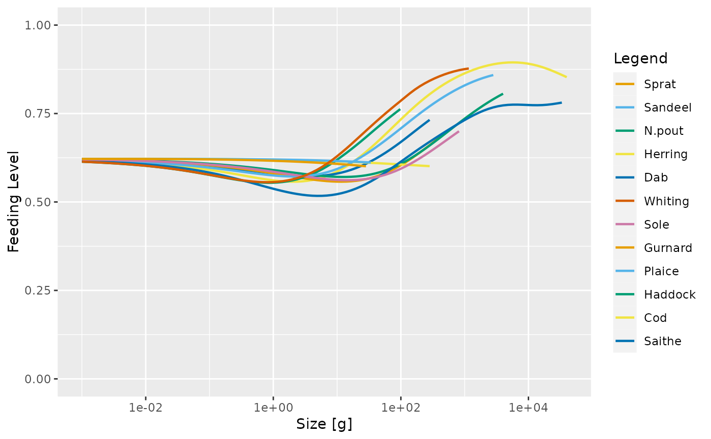

After running a projection, plot the feeding level of each species by size. The feeding level is averaged over the specified time range (a single value for the time range can be used).
plotFeedingLevel( object, species = NULL, time_range, highlight = NULL, all.sizes = FALSE, include_critical = FALSE, ... ) plotlyFeedingLevel( object, species = NULL, time_range, highlight = NULL, include_critical, ... )
Arguments
| object | An object of class MizerSim or MizerParams. |
|---|---|
| species | Name or vector of names of the species to be plotted. By default all species are plotted. |
| time_range | The time range (either a vector of values, a vector of min and max time, or a single value) to average the abundances over. Default is the final time step. Ignored when called with a MizerParams object. |
| highlight | Name or vector of names of the species to be highlighted. |
| all.sizes | If TRUE, then feeding level is plotted also for sizes outside a species' size range. Default FALSE. |
| include_critical | If TRUE, then the critical feeding level is also plotted. Default FALSE. |
| ... | Other arguments (currently unused) |
Value
A plot
Details
When called with a MizerSim object, the feeding level is averaged over the specified time range (a single value for the time range can be used to plot a single time step). When called with a MizerParams object the initial feeding level is plotted.
If include_critical = TRUE then the critical feeding level (the feeding
level at which the intake just covers the metabolic cost) is also plotted,
with a thinner line. This line should always stay below the line of the
actual feeding level, because the species would stop growing at any point
where the feeding level drops to the critical feeding level.
See also
plotting_functions(), getFeedingLevel()
Other plotting functions:
plot,MizerSim,missing-method,
plotBiomass(),
plotDiet(),
plotFMort(),
plotGrowthCurves(),
plotPredMort(),
plotSpectra(),
plotYieldGear(),
plotYield(),
plotting_functions
Examples
# \donttest{ params <- suppressMessages(newMultispeciesParams(NS_species_params_gears, inter)) sim <- project(params, effort=1, t_max=20, t_save = 2, progress_bar = FALSE) plotFeedingLevel(sim)# }